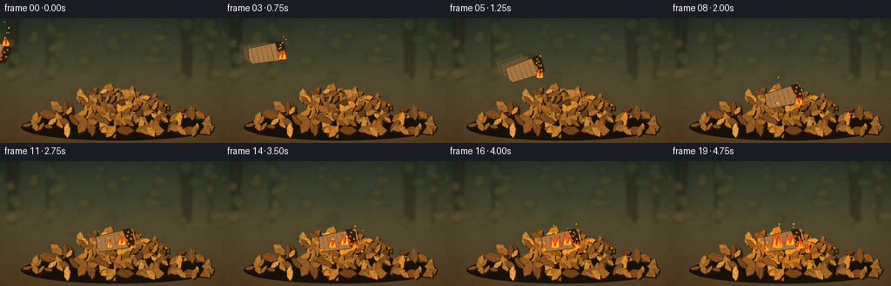
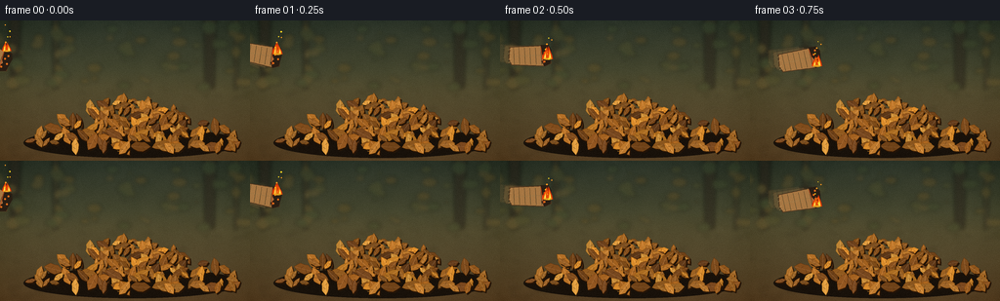
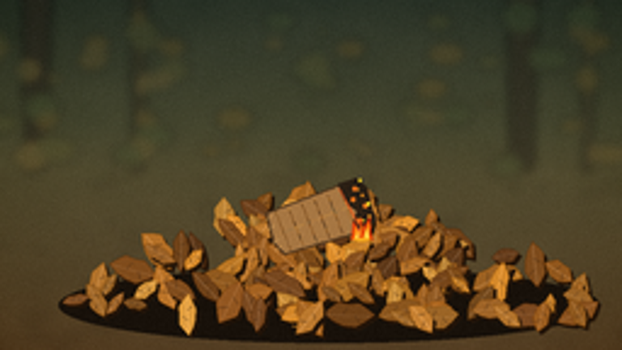
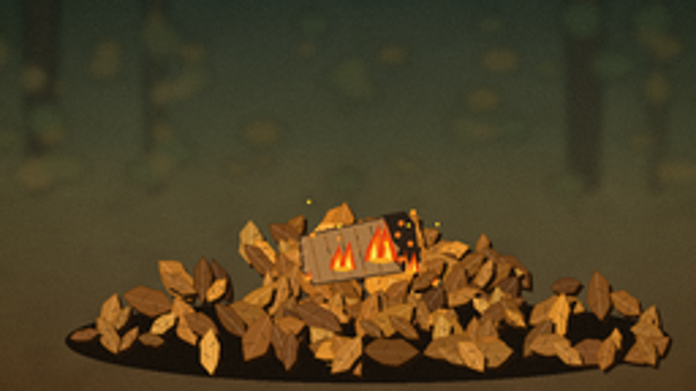
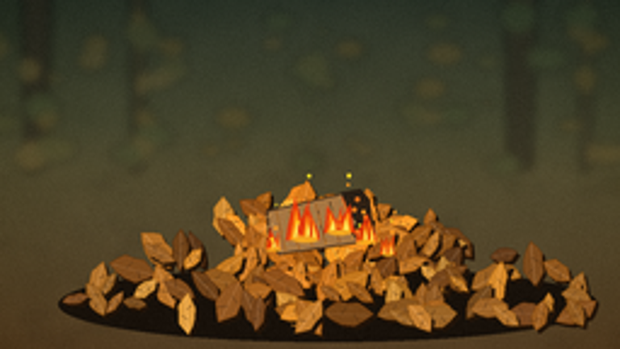

CODING AGENTS AS PIXEL WORLD MODELS
traex/GPT-5.6-Sol · material_0025
点击播放 · 原生 RGB 像素
逐轮保存的候选
回放视频、检查图与代码变化。
每份候选均可单独播放。实际图片检查记录在下方工具轨迹中。
候选 01播放与检查图
点击播放 · 原生 RGB 像素


展开代码变化
--- 上一保存版本
+++ 本次保存版本
@@ -0,0 +1,269 @@
+import json, math
+from pathlib import Path
+import numpy as np
+from PIL import Image, ImageDraw, ImageFilter
+import artifact_io
+
+ROOT = Path(__file__).resolve().parent
+spec = json.loads((ROOT/'task_spec.json').read_text())
+W,H,N = spec['width'],spec['height'],spec['frames']
+S=4
+w,h=W*S,H*S
+rng=np.random.default_rng(25019)
+
+def sc(v): return int(round(v*S))
+def pts_scaled(p): return [(sc(x),sc(y)) for x,y in p]
+
+def smooth_noise(HH,WW,seed,blur=12):
+ rr=np.random.default_rng(seed)
+ small=rr.normal(0,1,(max(3,HH//24),max(3,WW//24))).astype(np.float32)
+ a=(small-small.min())/(small.max()-small.min())
+ im=Image.fromarray(np.uint8(a*255)).resize((WW,HH),Image.Resampling.BICUBIC).filter(ImageFilter.GaussianBlur(blur))
+ return np.asarray(im,dtype=np.float32)/255
+
+# Make a static, softly focused woodland floor background.
+yy,xx=np.mgrid[0:h,0:w]
+yn=yy/h
+noise=smooth_noise(h,w,81,18)
+base=np.zeros((h,w,3),dtype=np.float32)
+# muted olive woods above, earthen floor below
+sky=np.clip((yn-0.0)/0.50,0,1)[...,None]
+top=np.array([42,51,40],np.float32); mid=np.array([78,76,48],np.float32)
+ground=np.array([88,66,39],np.float32)
+base[:]=top
+base=top*(1-sky)+mid*sky
+floor_mix=np.clip((yn-0.36)/0.64,0,1)[...,None]
+base=base*(1-floor_mix)+ground*floor_mix
+base += (noise[...,None]-.5)*np.array([18,15,11])
+# vignette
+rad=((xx-w*.52)/(w*.76))**2+((yy-h*.48)/(h*.86))**2
+base-=np.clip(rad-.22,0,1)[...,None]*22
+base=np.clip(base,0,255).astype(np.uint8)
+BG=Image.fromarray(base,'RGB')
+# blurred woodland features
+far=Image.new('RGBA',(w,h),(0,0,0,0)); d=ImageDraw.Draw(far,'RGBA')
+# hazy tree trunks
+for x0,tw,col in [(15,12,(36,31,23,150)),(57,7,(45,39,26,120)),(215,13,(39,34,25,140)),(242,6,(48,40,28,100))]:
+ d.polygon(pts_scaled([(x0-tw/2,0),(x0+tw/2,0),(x0+tw*.7/2,69),(x0-tw*.8/2,72)]),fill=col)
+# distant foliage/bokeh
+for i in range(70):
+ x0=float(rng.uniform(-10,266)); y0=float(rng.uniform(4,77)); r=float(rng.uniform(2,9))
+ palette=[(87,84,38,60),(124,89,30,58),(63,78,42,65),(153,112,46,42)]
+ col=palette[i%len(palette)]
+ d.ellipse((sc(x0-r),sc(y0-r*.65),sc(x0+r),sc(y0+r*.65)),fill=col)
+# indistinct dry litter on ground
+for i in range(90):
+ x0=float(rng.uniform(-5,261)); y0=float(rng.uniform(68,142));
+ leng=float(rng.uniform(3,13)); ang=float(rng.uniform(-.8,.8))
+ dx=math.cos(ang)*leng; dy=math.sin(ang)*leng*.28
+ d.line((sc(x0-dx/2),sc(y0-dy/2),sc(x0+dx/2),sc(y0+dy/2)),fill=(100,69,32,70),width=sc(rng.uniform(.5,1.8)))
+far=far.filter(ImageFilter.GaussianBlur(sc(2.0)))
+BG=Image.alpha_composite(BG.convert('RGBA'),far)
+
+# Static leaves, generated once and kept coherent frame-to-frame.
+leaf_palette=[(153,92,31),(181,117,45),(129,77,29),(203,142,57),(110,66,29),(169,105,37),(197,126,39),(142,89,35)]
+leaves=[]
+# pile mound: denser near center, width 190, base near 132
+for i in range(155):
+ x0=float(np.clip(rng.normal(137,47),31,238))
+ mound=max(0,1-((x0-138)/112)**2)
+ top=126-45*mound
+ y0=float(rng.uniform(top,131))
+ # more visible/larger at front
+ length=float(rng.uniform(8,18)*(0.85+0.3*(y0/144)))
+ wid=float(length*rng.uniform(.34,.55))
+ ang=float(rng.uniform(-math.pi,math.pi))
+ curl=float(rng.uniform(-.28,.28))
+ pal=leaf_palette[int(rng.integers(0,len(leaf_palette)))]
+ leaves.append((y0,x0,length,wid,ang,curl,pal,float(rng.uniform(.82,1.15))))
+leaves.sort()
+
+def leaf_poly(x0,y0,L,wd,a,curl):
+ # serrated pointed leaf silhouette around its central vein
+ local=[(-L*.52,0),(-L*.35,-wd*.34),(-L*.22,-wd*.54),(0,-wd*.48),
+ (L*.22,-wd*.52),(L*.40,-wd*.25),(L*.54,0),(L*.35,wd*.28),
+ (L*.15,wd*.51),(-L*.10,wd*.46),(-L*.31,wd*.30)]
+ ca,sa=math.cos(a),math.sin(a); out=[]
+ for lx,ly in local:
+ ly += curl*(lx/L)**2*wd
+ out.append((x0+lx*ca-ly*sa,y0+lx*sa+ly*ca))
+ return out
+
+def draw_leaf_layer(im, firelight=None):
+ dr=ImageDraw.Draw(im,'RGBA')
+ # pile contact shadow
+ dr.ellipse((sc(24),sc(110),sc(247),sc(141)),fill=(24,17,10,105))
+ for y0,x0,L,wd,a,curl,col,tone in leaves:
+ c=np.clip(np.array(col)*tone,0,255).astype(int)
+ if firelight is not None:
+ fx,fy,strength=firelight
+ dist=math.hypot(x0-fx,(y0-fy)*1.25)
+ warm=max(0,1-dist/(48*strength))*strength
+ c=np.clip(c+np.array([70,30,-8])*warm,0,255).astype(int)
+ p=leaf_poly(x0,y0,L,wd,a,curl)
+ # offset tiny shadow
+ dr.polygon(pts_scaled([(x+1.2,y+1.5) for x,y in p]),fill=(35,20,8,105))
+ dr.polygon(pts_scaled(p),fill=tuple(c)+(255,),outline=tuple(np.maximum(c-32,0))+(225,))
+ ca,sa=math.cos(a),math.sin(a)
+ x1,y1=x0-L*.43*ca,y0-L*.43*sa; x2,y2=x0+L*.43*ca,y0+L*.43*sa
+ hi=tuple(np.minimum(c+32,255))+(135,)
+ dr.line((sc(x1),sc(y1),sc(x2),sc(y2)),fill=hi,width=max(1,sc(.42)))
+ # two subtle side veins
+ for q,sg in [(-.13,-1),(.13,1)]:
+ vx=x0+q*L*ca; vy=y0+q*L*sa
+ ex=vx+sg*wd*.32*(-sa)+L*.10*ca; ey=vy+sg*wd*.32*ca+L*.10*sa
+ dr.line((sc(vx),sc(vy),sc(ex),sc(ey)),fill=(64,37,15,80),width=max(1,sc(.25)))
+
+# Cardboard sprite with fibrous surface, charred right edge.
+def cardboard_sprite(angle, char_amount=1.0):
+ sw,sh=sc(48),sc(29)
+ im=Image.new('RGBA',(sw,sh),(0,0,0,0)); dr=ImageDraw.Draw(im,'RGBA')
+ # rectangular torn piece in local coordinates
+ poly=[(sc(3),sc(5)),(sc(43),sc(3)),(sc(46),sc(22)),(sc(39),sc(25)),(sc(5),sc(24)),(sc(2),sc(18))]
+ dr.polygon(poly,fill=(167,119,67,255),outline=(77,52,29,255),width=sc(1))
+ # corrugation / creases
+ for j in range(6):
+ x=sc(7+j*5.6)
+ dr.line((x,sc(6),x+sc(1),sc(23)),fill=(108,72,37,95),width=sc(.45))
+ dr.line((sc(6),sc(15),sc(40),sc(13)),fill=(224,178,108,105),width=sc(.55))
+ # torn fibers at left
+ for yy0 in [8,12,18,21]:
+ dr.line((sc(2),sc(yy0),sc(5),sc(yy0-1)),fill=(229,184,113,180),width=sc(.6))
+ # blackened burning corner on right
+ dr.polygon(pts_scaled([(35,3),(43,3),(46,8),(45,22),(39,25),(36,20),(39,16),(36,12)]),fill=(42,29,20,245))
+ dr.line((sc(35),sc(5),sc(38),sc(22)),fill=(236,74,20,170),width=sc(.7))
+ # irregular tiny glowing embers in char
+ for x0,y0 in [(41,7),(39,11),(43,15),(39,20)]:
+ dr.ellipse((sc(x0-1),sc(y0-1),sc(x0+1),sc(y0+1)),fill=(255,116,25,220))
+ return im.rotate(angle,resample=Image.Resampling.BICUBIC,expand=True)
+
+def position_at(f):
+ # thrown from left, clear downward arc, lands at center of leaves
+ if f<=7:
+ u=f/7
+ x=-10+(132+10)*u
+ y=36 + 35*u + 19*u*u - 14*math.sin(math.pi*u)
+ ang=-25+43*u+16*math.sin(math.pi*u)
+ else:
+ settle=math.exp(-(f-7)*.7)
+ x=132+2.2*settle*math.sin((f-7)*2.3)
+ y=90+2.5*(1-settle)
+ ang=18-8*(1-settle)
+ return x,y,ang
+
+def add_smoke(im,f,base_x,base_y,intensity):
+ if intensity<=0: return im
+ layer=Image.new('RGBA',(w,h),(0,0,0,0)); dr=ImageDraw.Draw(layer,'RGBA')
+ # coherent drifting puffs; rise and move right
+ for k in range(11):
+ age=(f*.72+k*1.53)%9.0
+ if age>f*.95+1 and f<9: continue
+ rise=age*6.5
+ x=base_x+age*1.45+math.sin(k*2.1+f*.19)*3.0
+ y=base_y-rise
+ r=(2.7+age*1.25)*(0.65+intensity*.35)
+ alpha=int(48*intensity*(1-age/11)*min(1,age/1.1))
+ if alpha>0:
+ col=(55,52,46,alpha) if k%2 else (91,86,73,alpha)
+ dr.ellipse((sc(x-r),sc(y-r*.72),sc(x+r),sc(y+r*.72)),fill=col)
+ layer=layer.filter(ImageFilter.GaussianBlur(sc(2.8+intensity)))
+ return Image.alpha_composite(im,layer)
+
+def flame_layer(f, clusters):
+ # clusters: x,y,size,phase tuples. Return glow and crisp fire.
+ glow=Image.new('RGBA',(w,h),(0,0,0,0)); gd=ImageDraw.Draw(glow,'RGBA')
+ fire=Image.new('RGBA',(w,h),(0,0,0,0)); dr=ImageDraw.Draw(fire,'RGBA')
+ for ci,(x0,y0,size,phase) in enumerate(clusters):
+ if size<=.05: continue
+ gd.ellipse((sc(x0-size*8),sc(y0-size*9),sc(x0+size*8),sc(y0+size*4)),fill=(255,82,8,int(70*min(size,1.3))))
+ tongues=max(2,int(2+size*2.3))
+ for j in range(tongues):
+ frac=(j+.5)/tongues
+ bx=x0+(frac-.5)*size*10
+ bw=size*(3.2+1.4*math.sin(j*3.1+phase))
+ ht=size*(9+9*(.45+.55*math.sin(phase+f*.78+j*2.7)**2))
+ tipx=bx+size*2.7*math.sin(f*.53+j*1.8+phase)
+ # broad outer red-orange silhouette
+ outer=[(bx-bw,y0),(bx-bw*.82,y0-ht*.33),(tipx,y0-ht),(bx+bw*.72,y0-ht*.29),(bx+bw,y0)]
+ dr.polygon(pts_scaled(outer),fill=(231,55,8,235))
+ # orange middle
+ mid=[(bx-bw*.64,y0),(bx-bw*.4,y0-ht*.27),(tipx*.55+bx*.45,y0-ht*.73),(bx+bw*.44,y0-ht*.22),(bx+bw*.62,y0)]
+ dr.polygon(pts_scaled(mid),fill=(255,139,15,245))
+ # yellow-white hot base/core
+ inner=[(bx-bw*.31,y0),(bx-bw*.18,y0-ht*.19),(bx+size*.55*math.sin(phase+j),y0-ht*.47),(bx+bw*.28,y0-ht*.16),(bx+bw*.34,y0)]
+ dr.polygon(pts_scaled(inner),fill=(255,230,88,250))
+ # luminous contact line
+ dr.ellipse((sc(x0-size*5.3),sc(y0-size*1.4),sc(x0+size*5.3),sc(y0+size*1.1)),fill=(255,174,28,220))
+ glow=glow.filter(ImageFilter.GaussianBlur(sc(6)))
+ return glow,fire
+
+def draw_sparks(im,f,clusters,amount):
+ if amount<=0: return
+ dr=ImageDraw.Draw(im,'RGBA')
+ for k in range(int(4+amount*11)):
+ age=(f*.65+k*.91)%5.8
+ ci=k%len(clusters); x,y,s,p=clusters[ci]
+ sx=x+math.sin(k*5.12)*s*4 + age*(.25+((k%3)-1)*.22)
+ sy=y-age*(4.0+(k%4)*.45)
+ a=int(240*max(0,1-age/6)*amount)
+ r=.45+(k%3)*.17
+ dr.ellipse((sc(sx-r),sc(sy-r),sc(sx+r),sc(sy+r)),fill=(255,155+(k%2)*65,35,a))
+
+frames=[]
+for f in range(N):
+ # Fire spread begins only after the burning cardboard contacts pile at frame 7.
+ spread=max(0,(f-7)/12)
+ fire_strength=0.33+0.95*spread
+ cx,cy,ang=position_at(f)
+ im=BG.copy()
+ # local firelight over leaves after landing
+ light=None if f<6 else (132,92,0.30+spread*.82)
+ draw_leaf_layer(im,light)
+
+ # Smoke sits behind the fire/cardboard. In flight, it trails from burning corner.
+ if f<8:
+ im=add_smoke(im,f,cx+17,cy-5,.33)
+ else:
+ im=add_smoke(im,f,132,88,.40+spread*.55)
+
+ # motion-blurred prior silhouettes communicate the throw, only while airborne
+ if 1<=f<=6:
+ for lag,alpha in [(0.55,38),(0.28,62)]:
+ px,py,pa=position_at(max(0,f-lag))
+ spr=cardboard_sprite(pa)
+ spr.putalpha(spr.getchannel('A').point(lambda q: q*alpha//255))
+ im.alpha_composite(spr,(int(sc(px)-spr.width/2),int(sc(py)-spr.height/2)))
+
+ # Fire tongues: one attached to the burning right corner; later several spread to leaves.
+ rad=math.radians(ang)
+ # approximate burning corner offset under rotation
+ bx=cx+18*math.cos(rad)-1*math.sin(rad); by=cy+18*math.sin(rad)+1*math.cos(rad)
+ clusters=[]
+ if f<=8:
+ clusters.append((bx,by+2,.65+0.09*math.sin(f*.8),.7))
+ else:
+ clusters.append((140,96,.68+.15*spread,1.2))
+ if f>=8:
+ clusters += [(126,99,.24+spread*.75,2.3),(151,100,.12+spread*.62,4.0)]
+ if f>=11:
+ clusters += [(113,103,(spread-.20)*.68,5.2),(160,105,(spread-.20)*.55,.2)]
+ glow,fire=flame_layer(f,clusters)
+ im=Image.alpha_composite(im,glow)
+
+ # Cardboard lies above leaves but behind the flame.
+ sprite=cardboard_sprite(ang)
+ im.alpha_composite(sprite,(int(sc(cx)-sprite.width/2),int(sc(cy)-sprite.height/2)))
+
+ im=Image.alpha_composite(im,fire)
+ draw_sparks(im,f,clusters,0.35+spread*.65)
+
+ # slight warm foreground bounce and cinematic contrast
+ arr=np.asarray(im.convert('RGB').resize((W,H),Image.Resampling.LANCZOS),dtype=np.float32)
+ # Subtle film grain remains temporally stable enough not to distract.
+ gr=np.random.default_rng(600+f).normal(0,1.15,(H,W,1))
+ arr=np.clip(arr+gr,0,255).astype(np.uint8)
+ frames.append(arr)
+
+frames=np.stack(frames,axis=0)
+artifact_io.save(frames,ROOT)
+print('saved',frames.shape,frames.dtype)
可观测工具轨迹
实际执行的命令与返回图片。
命令 1exit 0
/bin/bash -lc "cat prompt.txt && printf '\\n---RULES---\\n' && cat GENERATION_RULES.md && printf '\\n---SPEC---\\n' && cat task_spec.json"
命令 2exit 0
/bin/bash -lc "find . -maxdepth 2 -type f -printf '%p\\n' | sort"
命令 3exit 0
/bin/bash -lc 'cat artifact_io.py'
命令 4exit 0
/bin/bash -lc "cat > generate.py <<'PY'
import json, math
from pathlib import Path
import numpy as np
from PIL import Image, ImageDraw, ImageFilter
import artifact_io
ROOT = Path(__file__).resolve().parent
spec = json.loads((ROOT/'task_spec.json').read_text())
W,H,N = spec['width'],spec['height'],spec['frames']
S=4
w,h=W*S,H*S
rng=np.random.default_rng(25019)
def sc(v): return int(round(v*S))
def pts_scaled(p): return [(sc(x),sc(y)) for x,y in p]
def smooth_noise(HH,WW,seed,blur=12):
rr=np.random.default_rng(seed)
small=rr.normal(0,1,(max(3,HH//24),max(3,WW//24))).astype(np.float32)
a=(small-small.min())/(small.max()-small.min())
im=Image.fromarray(np.uint8(a*255)).resize((WW,HH),Image.Resampling.BICUBIC).filter(ImageFilter.GaussianBlur(blur))
return np.asarray(im,dtype=np.float32)/255
# Make a static, softly focused woodland floor background.
yy,xx=np.mgrid[0:h,0:w]
yn=yy/h
noise=smooth_noise(h,w,81,18)
base=np.zeros((h,w,3),dtype=np.float32)
# muted olive woods above, earthen floor below
sky=np.clip((yn-0.0)/0.50,0,1)[...,None]
top=np.array([42,51,40],np.float32); mid=np.array([78,76,48],np.float32)
ground=np.array([88,66,39],np.float32)
base[:]=top
base=top*(1-sky)+mid*sky
floor_mix=np.clip((yn-0.36)/0.64,0,1)[...,None]
base=base*(1-floor_mix)+ground*floor_mix
base += (noise[...,None]-.5)*np.array([18,15,11])
# vignette
rad=((xx-w*.52)/(w*.76))**2+((yy-h*.48)/(h*.86))**2
base-=np.clip(rad-.22,0,1)[...,None]*22
base=np.clip(base,0,255).astype(np.uint8)
BG=Image.fromarray(base,'RGB')
# blurred woodland features
far=Image.new('RGBA',(w,h),(0,0,0,0)); d=ImageDraw.Draw(far,'RGBA')
# hazy tree trunks
for x0,tw,col in [(15,12,(36,31,23,150)),(57,7,(45,39,26,120)),(215,13,(39,34,25,140)),(242,6,(48,40,28,100))]:
d.polygon(pts_scaled([(x0-tw/2,0),(x0+tw/2,0),(x0+tw*.7/2,69),(x0-tw*.8/2,72)]),fill=col)
# distant foliage/bokeh
for i in range(70):
x0=float(rng.uniform(-10,266)); y0=float(rng.uniform(4,77)); r=float(rng.uniform(2,9))
palette=[(87,84,38,60),(124,89,30,58),(63,78,42,65),(153,112,46,42)]
col=palette[i%len(palette)]
d.ellipse((sc(x0-r),sc(y0-r*.65),sc(x0+r),sc(y0+r*.65)),fill=col)
# indistinct dry litter on ground
for i in range(90):
x0=float(rng.uniform(-5,261)); y0=float(rng.uniform(68,142));
leng=float(rng.uniform(3,13)); ang=float(rng.uniform(-.8,.8))
dx=math.cos(ang)*leng; dy=math.sin(ang)*leng*.28
d.line((sc(x0-dx/2),sc(y0-dy/2),sc(x0+dx/2),sc(y0+dy/2)),fill=(100,69,32,70),width=sc(rng.uniform(.5,1.8)))
far=far.filter(ImageFilter.GaussianBlur(sc(2.0)))
BG=Image.alpha_composite(BG.convert('RGBA'),far)
# Static leaves, generated once and kept coherent frame-to-frame.
leaf_palette=[(153,92,31),(181,117,45),(129,77,29),(203,142,57),(110,66,29),(169,105,37),(197,126,39),(142,89,35)]
leaves=[]
# pile mound: denser near center, width 190, base near 132
for i in range(155):
x0=float(np.clip(rng.normal(137,47),31,238))
mound=max(0,1-((x0-138)/112)**2)
top=126-45*mound
y0=float(rng.uniform(top,131))
# more visible/larger at front
length=float(rng.uniform(8,18)*(0.85+0.3*(y0/144)))
wid=float(length*rng.uniform(.34,.55))
ang=float(rng.uniform(-math.pi,math.pi))
curl=float(rng.uniform(-.28,.28))
pal=leaf_palette[int(rng.integers(0,len(leaf_palette)))]
leaves.append((y0,x0,length,wid,ang,curl,pal,float(rng.uniform(.82,1.15))))
leaves.sort()
def leaf_poly(x0,y0,L,wd,a,curl):
# serrated pointed leaf silhouette around its central vein
local=[(-L*.52,0),(-L*.35,-wd*.34),(-L*.22,-wd*.54),(0,-wd*.48),
(L*.22,-wd*.52),(L*.40,-wd*.25),(L*.54,0),(L*.35,wd*.28),
(L*.15,wd*.51),(-L*.10,wd*.46),(-L*.31,wd*.30)]
ca,sa=math.cos(a),math.sin(a); out=[]
for lx,ly in local:
ly += curl*(lx/L)**2*wd
out.append((x0+lx*ca-ly*sa,y0+lx*sa+ly*ca))
return out
def draw_leaf_layer(im, firelight=None):
dr=ImageDraw.Draw(im,'RGBA')
# pile contact shadow
dr.ellipse((sc(24),sc(110),sc(247),sc(141)),fill=(24,17,10,105))
for y0,x0,L,wd,a,curl,col,tone in leaves:
c=np.clip(np.array(col)*tone,0,255).astype(int)
if firelight is not None:
fx,fy,strength=firelight
dist=math.hypot(x0-fx,(y0-fy)*1.25)
warm=max(0,1-dist/(48*strength))*strength
c=np.clip(c+np.array([70,30,-8])*warm,0,255).astype(int)
p=leaf_poly(x0,y0,L,wd,a,curl)
# offset tiny shadow
dr.polygon(pts_scaled([(x+1.2,y+1.5) for x,y in p]),fill=(35,20,8,105))
dr.polygon(pts_scaled(p),fill=tuple(c)+(255,),outline=tuple(np.maximum(c-32,0))+(225,))
ca,sa=math.cos(a),math.sin(a)
x1,y1=x0-L*.43*ca,y0-L*.43*sa; x2,y2=x0+L*.43*ca,y0+L*.43*sa
hi=tuple(np.minimum(c+32,255))+(135,)
dr.line((sc(x1),sc(y1),sc(x2),sc(y2)),fill=hi,width=max(1,sc(.42)))
# two subtle side veins
for q,sg in [(-.13,-1),(.13,1)]:
vx=x0+q*L*ca; vy=y0+q*L*sa
ex=vx+sg*wd*.32*(-sa)+L*.10*ca; ey=vy+sg*wd*.32*ca+L*.10*sa
dr.line((sc(vx),sc(vy),sc(ex),sc(ey)),fill=(64,37,15,80),width=max(1,sc(.25)))
# Cardboard sprite with fibrous surface, charred right edge.
def cardboard_sprite(angle, char_amount=1.0):
sw,sh=sc(48),sc(29)
im=Image.new('RGBA',(sw,sh),(0,0,0,0)); dr=ImageDraw.Draw(im,'RGBA')
# rectangular torn piece in local coordinates
poly=[(sc(3),sc(5)),(sc(43),sc(3)),(sc(46),sc(22)),(sc(39),sc(25)),(sc(5),sc(24)),(sc(2),sc(18))]
dr.polygon(poly,fill=(167,119,67,255),outline=(77,52,29,255),width=sc(1))
# corrugation / creases
for j in range(6):
x=sc(7+j*5.6)
dr.line((x,sc(6),x+sc(1),sc(23)),fill=(108,72,37,95),width=sc(.45))
dr.line((sc(6),sc(15),sc(40),sc(13)),fill=(224,178,108,105),width=sc(.55))
# torn fibers at left
for yy0 in [8,12,18,21]:
dr.line((sc(2),sc(yy0),sc(5),sc(yy0-1)),fill=(229,184,113,180),width=sc(.6))
# blackened burning corner on right
dr.polygon(pts_scaled([(35,3),(43,3),(46,8),(45,22),(39,25),(36,20),(39,16),(36,12)]),fill=(42,29,20,245))
dr.line((sc(35),sc(5),sc(38),sc(22)),fill=(236,74,20,170),width=sc(.7))
# irregular tiny glowing embers in char
for x0,y0 in [(41,7),(39,11),(43,15),(39,20)]:
dr.ellipse((sc(x0-1),sc(y0-1),sc(x0+1),sc(y0+1)),fill=(255,116,25,220))
return im.rotate(angle,resample=Image.Resampling.BICUBIC,expand=True)
def position_at(f):
# thrown from left, clear downward arc, lands at center of leaves
if f<=7:
u=f/7
x=-10+(132+10)*u
y=36 + 35*u + 19*u*u - 14*math.sin(math.pi*u)
ang=-25+43*u+16*math.sin(math.pi*u)
else:
settle=math.exp(-(f-7)*.7)
x=132+2.2*settle*math.sin((f-7)*2.3)
y=90+2.5*(1-settle)
ang=18-8*(1-settle)
return x,y,ang
def add_smoke(im,f,base_x,base_y,intensity):
if intensity<=0: return im
layer=Image.new('RGBA',(w,h),(0,0,0,0)); dr=ImageDraw.Draw(layer,'RGBA')
# coherent drifting puffs; rise and move right
for k in range(11):
age=(f*.72+k*1.53)%9.0
if age>f*.95+1 and f<9: continue
rise=age*6.5
x=base_x+age*1.45+math.sin(k*2.1+f*.19)*3.0
y=base_y-rise
r=(2.7+age*1.25)*(0.65+intensity*.35)
alpha=int(48*intensity*(1-age/11)*min(1,age/1.1))
if alpha>0:
col=(55,52,46,alpha) if k%2 else (91,86,73,alpha)
dr.ellipse((sc(x-r),sc(y-r*.72),sc(x+r),sc(y+r*.72)),fill=col)
layer=layer.filter(ImageFilter.GaussianBlur(sc(2.8+intensity)))
return Image.alpha_composite(im,layer)
def flame_layer(f, clusters):
# clusters: x,y,size,phase tuples. Return glow and crisp fire.
glow=Image.new('RGBA',(w,h),(0,0,0,0)); gd=ImageDraw.Draw(glow,'RGBA')
fire=Image.new('RGBA',(w,h),(0,0,0,0)); dr=ImageDraw.Draw(fire,'RGBA')
for ci,(x0,y0,size,phase) in enumerate(clusters):
if size<=.05: continue
gd.ellipse((sc(x0-size*8),sc(y0-size*9),sc(x0+size*8),sc(y0+size*4)),fill=(255,82,8,int(70*min(size,1.3))))
tongues=max(2,int(2+size*2.3))
for j in range(tongues):
frac=(j+.5)/tongues
bx=x0+(frac-.5)*size*10
bw=size*(3.2+1.4*math.sin(j*3.1+phase))
ht=size*(9+9*(.45+.55*math.sin(phase+f*.78+j*2.7)**2))
tipx=bx+size*2.7*math.sin(f*.53+j*1.8+phase)
# broad outer red-orange silhouette
outer=[(bx-bw,y0),(bx-bw*.82,y0-ht*.33),(tipx,y0-ht),(bx+bw*.72,y0-ht*.29),(bx+bw,y0)]
dr.polygon(pts_scaled(outer),fill=(231,55,8,235))
# orange middle
mid=[(bx-bw*.64,y0),(bx-bw*.4,y0-ht*.27),(tipx*.55+bx*.45,y0-ht*.73),(bx+bw*.44,y0-ht*.22),(bx+bw*.62,y0)]
dr.polygon(pts_scaled(mid),fill=(255,139,15,245))
# yellow-white hot base/core
inner=[(bx-bw*.31,y0),(bx-bw*.18,y0-ht*.19),(bx+size*.55*math.sin(phase+j),y0-ht*.47),(bx+bw*.28,y0-ht*.16),(bx+bw*.34,y0)]
dr.polygon(pts_scaled(inner),fill=(255,230,88,250))
# luminous contact line
dr.ellipse((sc(x0-size*5.3),sc(y0-size*1.4),sc(x0+size*5.3),sc(y0+size*1.1)),fill=(255,174,28,220))
glow=glow.filter(ImageFilter.GaussianBlur(sc(6)))
return glow,fire
def draw_sparks(im,f,clusters,amount):
if amount<=0: return
dr=ImageDraw.Draw(im,'RGBA')
for k in range(int(4+amount*11)):
age=(f*.65+k*.91)%5.8
ci=k%len(clusters); x,y,s,p=clusters[ci]
sx=x+math.sin(k*5.12)*s*4 + age*(.25+((k%3)-1)*.22)
sy=y-age*(4.0+(k%4)*.45)
a=int(240*max(0,1-age/6)*amount)
r=.45+(k%3)*.17
dr.ellipse((sc(sx-r),sc(sy-r),sc(sx+r),sc(sy+r)),fill=(255,155+(k%2)*65,35,a))
frames=[]
for f in range(N):
# Fire spread begins only after the burning cardboard contacts pile at frame 7.
spread=max(0,(f-7)/12)
fire_strength=0.33+0.95*spread
cx,cy,ang=position_at(f)
im=BG.copy()
# local firelight over leaves after landing
light=None if f<6 else (132,92,0.30+spread*.82)
draw_leaf_layer(im,light)
# Smoke sits behind the fire/cardboard. In flight, it trails from burning corner.
if f<8:
im=add_smoke(im,f,cx+17,cy-5,.33)
else:
im=add_smoke(im,f,132,88,.40+spread*.55)
# motion-blurred prior silhouettes communicate the throw, only while airborne
if 1<=f<=6:
for lag,alpha in [(0.55,38),(0.28,62)]:
px,py,pa=position_at(max(0,f-lag))
spr=cardboard_sprite(pa)
spr.putalpha(spr.getchannel('A').point(lambda q: q*alpha//255))
im.alpha_composite(spr,(int(sc(px)-spr.width/2),int(sc(py)-spr.height/2)))
# Fire tongues: one attached to the burning right corner; later several spread to leaves.
rad=math.radians(ang)
# approximate burning corner offset under rotation
bx=cx+18*math.cos(rad)-1*math.sin(rad); by=cy+18*math.sin(rad)+1*math.cos(rad)
clusters=[]
if f<=8:
clusters.append((bx,by+2,.65+0.09*math.sin(f*.8),.7))
else:
clusters.append((140,96,.68+.15*spread,1.2))
if f>=8:
clusters += [(126,99,.24+spread*.75,2.3),(151,100,.12+spread*.62,4.0)]
if f>=11:
clusters += [(113,103,(spread-.20)*.68,5.2),(160,105,(spread-.20)*.55,.2)]
glow,fire=flame_layer(f,clusters)
im=Image.alpha_composite(im,glow)
# Cardboard lies above leaves but behind the flame.
sprite=cardboard_sprite(ang)
im.alpha_composite(sprite,(int(sc(cx)-sprite.width/2),int(sc(cy)-sprite.height/2)))
im=Image.alpha_composite(im,fire)
draw_sparks(im,f,clusters,0.35+spread*.65)
# slight warm foreground bounce and cinematic contrast
arr=np.asarray(im.convert('RGB').resize((W,H),Image.Resampling.LANCZOS),dtype=np.float32)
# Subtle film grain remains temporally stable enough not to distract.
gr=np.random.default_rng(600+f).normal(0,1.15,(H,W,1))
arr=np.clip(arr+gr,0,255).astype(np.uint8)
frames.append(arr)
frames=np.stack(frames,axis=0)
artifact_io.save(frames,ROOT)
print('saved',frames.shape,frames.dtype)
PY
python generate.py"命令 5exit 0
/bin/bash -lc "python - <<'PY'
from PIL import Image
for n in (7,10,13,16,19):
im=Image.open(f'frames/{n:02d}.png'); im.resize((768,432)).save(f'.tmp/frame{n}.png')
PY
ls -lh pixels.npz index.html inspection.png frames/00.png frames/19.png"命令 6exit 0
/bin/bash -lc "python - <<'PY'
import numpy as np, json
z=np.load('pixels.npz')['pixels']
print(z.shape,z.dtype,'frames',len(list(__import__('pathlib').Path('frames').glob('*.png'))))
assert z.shape==(144,256,20)
PY"视觉工具实际返回图片 1

视觉工具实际返回图片 2

视觉工具实际返回图片 3

视觉工具实际返回图片 4

视觉工具实际返回图片 5

保存候选 1 份；完成命令 6 次；可验证图片返回 5 张。原始 API 响应与完整日志保留在本地。